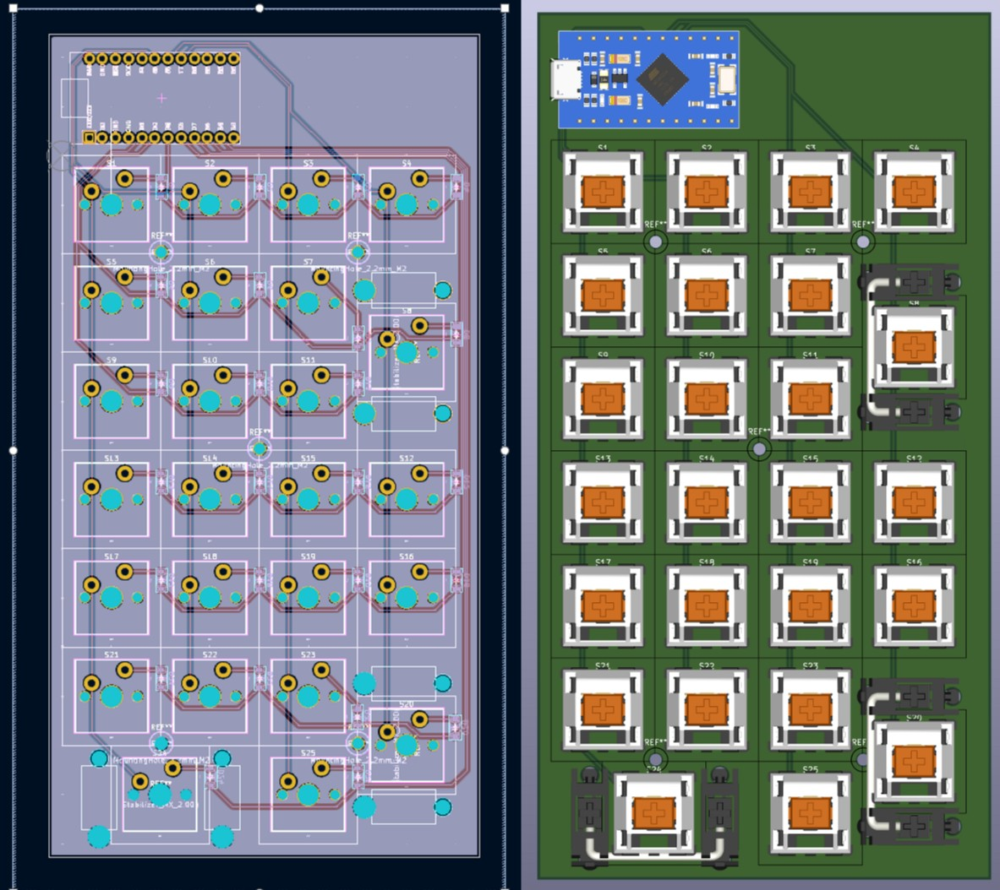

ELECTRONICS / EMBEDDED SYSTEMS
Custom Hexpad
A custom macropad designed from scratch with a custom PCB, hand-soldered components, custom firmware, and a 3D printed chassis.

Overview
This project was an opportunity to design and build a custom macropad from the ground up. I designed the PCB, programmed the firmware using QMK, assembled the electronics, and designed and 3D printed the enclosure.
Design
The project started with designing the layout and electrical schematic for the keyboard. I then created the PCB and designed the physical enclosure around the electronics.
Build Process
